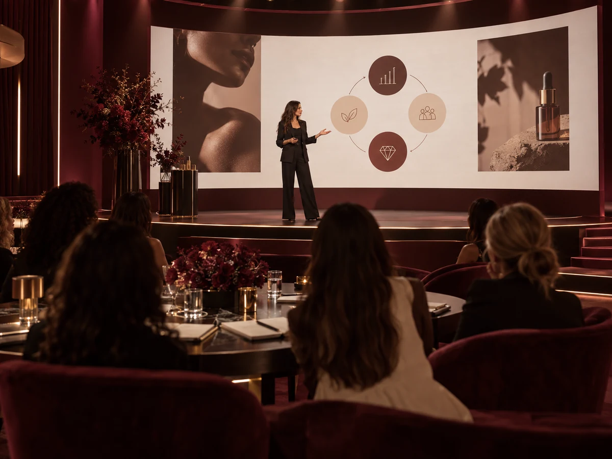

работать над своей персональной стратегией развития;
CREATOR
Практическая программа для бьюти-предпринимателей
От точки, в которой ваш бизнес находится сейчас, до точки, в которой он растёт системно: с сильной командой, работающим маркетингом, выстроенной финансовой моделью и чётким планом развития.
ПРИСОЕДИНИТЬСЯ К CREATOR02
CREATOR — ЭТО БОЛЬШЕ, ЧЕМ ОБУЧАЮЩАЯ ПРОГРАММА
Это комбинация методологии, практических инструментов и наставничества Леры Румы и Тихона Беляева— двух предпринимателей, которые развивают бьюти-бизнес на рынках Европы и Украины.
В CREATOR основной фокус не на записанных уроках, а на живой работе с участниками и их бизнесами.
На протяжении программы вы будете:
разбирать конкретные задачи своего бизнеса;
участвовать в еженедельных онлайн-мастермайндах с Лерой и Тихоном;
получать практические разборы и обратную связь;
внедрять инструменты сразу в процессе программы;
видеть, как похожие задачи решаются на двух разных рынках — Украины и Европы.
CREATOR — это наставничество, где знания сразу переходят в работу над вашим бизнесом.
01. МЕТОДОЛОГИЯ
Система работы с ключевыми зонами бьюти-бизнеса: финансы, маркетинг, клиенты, команда, управление и рост.
02. ДВА РЫНКА — ДВА ОПЫТА
Лера и Тихон показывают разные подходы к одним и тем же бизнес-задачам на примере Европы и Украины.

03. ЖИВАЯ РАБОТА
Еженедельные онлайн-мастермайнды, вопросы, практические разборы и работа с реальными ситуациями участников.
04. ПЕРСОНАЛЬНАЯ СТРАТЕГИЯ
Вы не просто проходите общую программу, а собираете решения и план действий под свою текущую точку и задачи бизнеса.
НЕ «ПОСМОТРЕТЬ КУРС», А ЗА ВРЕМЯ ПРОГРАММЫ РЕАЛЬНО ПОРАБОТАТЬ НАД СВОИМ БИЗНЕСОМ.
03
С КАКИМИ ЗАПРОСАМИ ПРИХОДЯТ В CREATOR
01 / 12
CREATOR начинается не с универсального совета, а с понимания вашей текущей точки и реальных задач бизнеса.
04
КАКИЕ ЗАДАЧИ РЕШАЕМ ВНУТРИ CREATOR
05
ПОЧЕМУ CREATOR — ЭТО НЕ КЛАССИЧЕСКИЙ ОНЛАЙН-КУРС
Здесь не будет десятков записанных уроков, которые вы обещаете себе когда-нибудь посмотреть.
CREATOR построен как живая практическая программа, где информация сразу соединяется с работой над вашим проектом.
Внутри:
экспертные видеоподкасты → задания → живые сессии → разборы → обратная связь → внедрение
06
ПОЧЕМУ CREATOR СОЗДАН В КОЛЛАБОРАЦИИ ЛЕРЫ РУМЫ И ТИХОНА БЕЛЯЕВА?
ДВА ПРЕДПРИНИМАТЕЛЯ. ДВА РЫНКА. ОДНА ИНДУСТРИЯ.
CREATOR появился из идеи объединить в одной программе два разных предпринимательских опыта в бьюти-бизнесе — Украины и Европы.
Лера и Тихон развивают собственные проекты, работают с командами, клиентами, маркетингом, финансами и управлением, но делают это в разных странах, в разных условиях и зачастую разными способами.
И именно в этом сила программы CREATOR.
CREATOR — это не взгляд одного эксперта на то, каким должен быть бьюти-бизнес. Это возможность посмотреть на него с двух сторон и собрать собственную работающую систему.
07
ЛЕРА РУМА
ПРЕДПРИНИМАТЕЛЬ В БЬЮТИ-ИНДУСТРИИ, КОТОРАЯ СТРОИТ БИЗНЕС НА ЕВРОПЕЙСКОМ РЫНКЕ
Лера Рума — предприниматель, владелица сети арт-бьюти-пространств Krasivo Project в Варшаве и Вроцлаве, развивает собственные проекты и бренд для волос Amazoniko.
Её сильная сторона — умение соединять бизнес, маркетинг и сильный бренд.
В CREATOR Лера делится своим опытом:
построения и развития бьюти-бизнеса в Европе;
маркетинга и привлечения клиентов;
создания сильного бренда вокруг проекта;
развития личного бренда собственника;
контента и медийности;
клиентского опыта и сервиса;
запуска новых продуктов и направлений;
управления и развития команды в растущем бизнесе.
Лера показывает бьюти-бизнес не только как услугу, а как бренд, вокруг которого можно создавать спрос, аудиторию и новые возможности для роста.
ТИХОН БЕЛЯЕВ
БЬЮТИ-ПРЕДПРИНИМАТЕЛЬ И ВЛАДЕЛЕЦ ПРЕМИАЛЬНЫХ САЛОНОВ YEEZY В КИЕВЕ
Тихон Беляев много лет развивает салонный бизнес на украинском рынке и знает его не по теории, а из ежедневной работы собственника.
В CREATOR Тихон делится опытом:
построения и развития салонного бизнеса;
найма и формирования сильной команды;
работы с мастерами и администраторами;
управления внутренними процессами;
финансов и ключевых показателей бизнеса;
клиентского сервиса;
удержания и возвращения клиентов;
построения сильного и узнаваемого бренда;
масштабирования и роли собственника в растущей компании.
Тихон показывает, как выстраивать бизнес изнутри: от команды и ежедневных процессов до системы, которая позволяет собственнику управлять и развивать проект дальше.
08
ДЛЯ КОГО CREATOR
CREATOR — для мастеров бьюти-индустрии, собственников бьюти-бизнеса, экспертов и создателей образовательных проектов, а также управляющих и руководителей бьюти-проектов.
01. МАСТЕРА БЬЮТИ-ИНДУСТРИИ
Для тех, кто уже работает на себя, развивает личный бренд, хочет больше зарабатывать, привлекать клиентов системнее и постепенно переходить от работы «на себя» к построению собственного проекта.
02. СОБСТВЕННИКИ БЬЮТИ-БИЗНЕСА
Для владельцев салонов, студий, клиник, барбершопов и других бьюти-проектов, которые хотят усилить финансы, маркетинг, команду, клиентскую базу и управление бизнесом.
03. ЭКСПЕРТЫ И СОЗДАТЕЛИ ОБРАЗОВАТЕЛЬНЫХ ПРОЕКТОВ
Для тех, кто хочет развивать личный бренд, упаковывать свою экспертность, запускать обучение, консультации, наставничество и создавать новые направления дохода.
04. УПРАВЛЯЮЩИЕ, CEO И COO БЬЮТИ-ПРОЕКТОВ
Для тех, кто отвечает за ежедневную работу и развитие бизнеса: команду, процессы, финансы, сервис, маркетинг и показатели проекта — и хочет управлять ими более системно.
Неважно, работаете вы самостоятельно, управляете командой или развиваете большой бьюти-проект — внутри CREATOR каждый работает со своей текущей точкой и задачами бизнеса.
09
ПРОГРАММА CREATOR
8 БЛОКОВ, КОТОРЫЕ СОБИРАЮТ БЬЮТИ-БИЗНЕС В ОДНУ СИСТЕМУ
Каждый блок CREATOR состоит не только из экспертного материала.
Внутри каждой темы:
экспертный видеоподкаст Леры Румы и Тихона Беляевапрактическая работа со своим проектомдополнительные материалыживой онлайн-мастермайндвопросы и разборывнедрение.
К каждому блоку участники получают прикладные материалы: гайды, чек-листы, рабочие тетради, шаблоны и Excel-таблицы, которые можно сразу использовать в своём бизнесе.
01. ДИАГНОСТИКА БЬЮТИ-БИЗНЕСА И РОЛЬ СОБСТВЕННИКА
СНАЧАЛА ПОНЯТЬ, ГДЕ ВЫ НАХОДИТЕСЬ СЕЙЧАС
Прежде чем менять маркетинг, нанимать новых людей или открывать следующую точку, важно увидеть бизнес целиком и понять, что действительно требует внимания в первую очередь.
В этом блоке участники проводят полную диагностику своего проекта и отдельно разбирают роль собственника внутри бизнеса.
РАЗБЕРЁМ:
как объективно оценить текущую точку бизнеса;
основные зоны, которые влияют на результат: финансы, маркетинг, клиенты, команда, сервис и управление;
какие показатели собственник должен видеть регулярно;
как находить слабые зоны, которые тормозят дальнейший рост;
почему бизнес начинает слишком сильно зависеть от собственника;
чем собственник должен заниматься лично, а какие задачи пора передавать команде;
как отличить проблему от её последствия;
как выбрать несколько приоритетных задач вместо попытки исправить всё одновременно;
как определить свою следующую точку развития.
ПРАКТИЧЕСКОЕ ЗАДАНИЕ
Провести полный чек-ап своего проекта, определить сильные и слабые зоны и сформировать основные задачи, с которыми участник будет работать на протяжении CREATOR.
ДОПОЛНИТЕЛЬНЫЕ МАТЕРИАЛЫ
CREATOR BUSINESS CHECK-UP — диагностика основных зон бизнеса;
чек-лист собственника;
таблица ключевых показателей бизнеса.
РЕЗУЛЬТАТ БЛОКА
Вы понимаете, где находится ваш проект сейчас, что конкретно мешает ему двигаться дальше и какие задачи должны стать приоритетными на время программы.
02. ФИНАНСЫ БЬЮТИ-БИЗНЕСА
НЕ ПРОСТО ВИДЕТЬ ОБОРОТ. ПОНИМАТЬ, КАК БИЗНЕС ЗАРАБАТЫВАЕТ
Можно иметь полную запись, команду и высокий оборот — и при этом получать значительно меньше прибыли, чем должен приносить бизнес.
В этом блоке разбираем финансовую модель бьюти-проекта и учимся смотреть на бизнес через цифры.
Отдельно будем говорить о реалиях Украины и Европы: расходах, стоимости команды, аренде, ценообразовании и разных финансовых моделях.
РАЗБЕРЁМ:
основные финансовые показатели, на которых строится бьюти-бизнес;
оборот, валовую и чистую прибыль, рентабельность;
какие цифры собственник должен контролировать ежедневно, еженедельно и ежемесячно;
как понимать реальную прибыль бизнеса;
основные рычаги увеличения чистой прибыли;
оптимизацию расходов без ухудшения качества продукта и сервиса;
фонд оплаты труда и его влияние на финансовую модель;
расходы на аренду, материалы, маркетинг и команду;
ценообразование и стоимость услуг;
финансовое планирование на месяц, квартал и год;
как оценивать новые идеи и решения до того, как вкладывать в них деньги;
чем финансовая модель бизнеса в Европе может отличаться от украинской.
ПРАКТИЧЕСКОЕ ЗАДАНИЕ
Собрать финансовую картину своего проекта, посчитать ключевые показатели, определить основные статьи расходов и найти потенциальные рычаги роста чистой прибыли.
ДОПОЛНИТЕЛЬНЫЕ МАТЕРИАЛЫ
Excel-таблица финансового учёта;
дашборд собственника;
таблица финансового планирования;
шаблон расчёта рентабельности;
чек-лист аудита расходов.
РЕЗУЛЬТАТ БЛОКА
Вы понимаете, сколько ваш бизнес зарабатывает на самом деле, куда уходят деньги, какие показатели требуют контроля и за счёт чего можно увеличивать прибыль.
03. КОМАНДА, НАЙМ И УПРАВЛЕНИЕ МАСТЕРАМИ
СОБРАТЬ КОМАНДУ, КОТОРАЯ НЕ ДЕРЖИТСЯ ТОЛЬКО НА СОБСТВЕННИКЕ
Одна из самых сложных частей бьюти-бизнеса — люди.
Найти сильного сотрудника недостаточно. Его нужно правильно выбрать, адаптировать, встроить в процессы, мотивировать и создать условия, в которых он захочет оставаться и развиваться вместе с компанией.
РАЗБЕРЁМ:
где сегодня искать мастеров, администраторов и других сотрудников;
как выстраивать воронку найма;
как проводить собеседования и на что смотреть кроме профессиональных навыков;
как понять ещё на этапе найма, подходит ли человек вашему проекту;
адаптацию нового сотрудника;
стандарты работы и ответственность внутри команды;
финансовую и нематериальную мотивацию;
проценты, KPI и дополнительные системы мотивации;
как удерживать сильных сотрудников;
работу со звёздными, но сложными мастерами;
токсичных сотрудников и конфликты внутри команды;
что делать, если сотрудник хочет уйти и забрать клиентов;
роль администратора и управляющего;
как перестать контролировать каждый процесс самостоятельно.
Отдельно будем сравнивать, как работа с командой устроена на рынках Украины и Европы, где отличаются ожидания сотрудников, модели оплаты и сам подход к найму.
ПРАКТИЧЕСКОЕ ЗАДАНИЕ
Провести аудит своей команды и системы найма: определить слабые места, пересобрать путь нового сотрудника от вакансии до адаптации и определить задачи по действующей команде.
ДОПОЛНИТЕЛЬНЫЕ МАТЕРИАЛЫ
шаблон вакансии;
чек-лист собеседования;
таблица оценки кандидата;
чек-лист адаптации сотрудника;
шаблон KPI;
гайд по мотивации команды;
чек-лист аудита действующей команды.
РЕЗУЛЬТАТ БЛОКА
Вы понимаете, кого вам нужно нанимать, как выбирать и адаптировать людей, как работать с действующей командой и какие процессы должны перестать зависеть только от вас.
04. СЕРВИС И КЛИЕНТСКИЙ ОПЫТ
СЕРВИС, КОТОРЫЙ НЕ ЗАВИСИТ ОТ НАСТРОЕНИЯ КОНКРЕТНОГО СОТРУДНИКА
В бьюти клиент оценивает не только результат услуги.
Первое сообщение, запись, встреча, работа администратора, пространство, мастер, коммуникация после визита — всё это формирует впечатление о бренде и влияет на то, вернётся человек или нет.
РАЗБЕРЁМ:
полный клиентский путь от первого касания до повторного визита;
на каких этапах чаще всего теряется клиент;
коммуникацию до, во время и после посещения;
роль администратора в клиентском опыте;
стандарты сервиса;
как создавать сервис, который можно масштабировать на всю команду;
атмосферу и детали, которые формируют восприятие бренда;
как работать с жалобами и сложными ситуациями;
как собирать и использовать обратную связь клиентов;
как сервис влияет на возврат, рекомендации и продажи;
что отличается в ожиданиях клиентов на европейском и украинском рынках.
ПРАКТИЧЕСКОЕ ЗАДАНИЕ
Пройти путь своего клиента от первого знакомства с проектом до следующей записи и провести аудит всех ключевых точек контакта.
ДОПОЛНИТЕЛЬНЫЕ МАТЕРИАЛЫ
карта клиентского пути;
чек-лист аудита сервиса;
шаблон стандартов обслуживания;
скрипты основных коммуникаций с клиентом;
форма сбора обратной связи;
чек-лист работы администратора.
РЕЗУЛЬТАТ БЛОКА
Вы увидите бизнес глазами клиента и поймёте, что нужно изменить, чтобы сервис стал частью системы, усиливал бренд и помогал возвращать клиентов.
05. РАБОТА С ДЕЙСТВУЮЩЕЙ КЛИЕНТСКОЙ БАЗОЙ
НОВЫЙ КЛИЕНТ — НЕ ЕДИНСТВЕННЫЙ СПОСОБ РАСТИ
Очень часто бизнес постоянно вкладывается в привлечение новых клиентов, но практически не работает с людьми, которые уже были в салоне, покупали продукт, интересовались услугами или давно не возвращались.
В этом блоке разбираем клиентскую базу как отдельный актив бизнеса.
РАЗБЕРЁМ:
как правильно работать с действующей базой;
какие показатели возврата клиентов нужно отслеживать;
повторную запись;
как возвращать клиентов, которые давно не приходили;
сегментацию базы;
разные сценарии коммуникации для разных групп клиентов;
рассылки и персональные предложения;
акции: когда они работают, а когда просто уменьшают маржу;
дополнительные продажи и повышение среднего чека;
как использовать CRM;
как оценивать реальную ценность клиентской базы;
как сделать так, чтобы маркетинг не заканчивался после первого визита.
ПРАКТИЧЕСКОЕ ЗАДАНИЕ
Провести аудит своей клиентской базы, разделить её на основные сегменты и собрать план работы с повторными визитами и возвращением клиентов.
ДОПОЛНИТЕЛЬНЫЕ МАТЕРИАЛЫ
Excel-таблица анализа клиентской базы;
шаблон сегментации;
скрипты возвращения клиентов;
примеры рассылок;
таблица контроля повторной записи;
чек-лист работы с «уснувшей» базой.
РЕЗУЛЬТАТ БЛОКА
Вы понимаете, как системно работать с уже существующими клиентами, повышать возвращаемость и получать больше результата от базы, которую бизнес уже собрал.
06. МАРКЕТИНГ, ИНСТАГРАМ И ПРИВЛЕЧЕНИЕ КЛИЕНТОВ
МАРКЕТИНГ, КОТОРЫЙ РЕШАЕТ ЗАДАЧИ БИЗНЕСА, А НЕ ПРОСТО СОБИРАЕТ ОХВАТЫ
Красивого Инстаграма и периодических рилс уже недостаточно.
В этом блоке разбираем, как собрать маркетинг вокруг целей бизнеса: кого привлекаем, что продаём, через какие каналы и как понимаем, работает это или нет.
РАЗБЕРЁМ:
как строится маркетинговая система бьюти-проекта;
позиционирование и отличие от конкурентов;
кому и что вы продаёте;
Инстаграм как инструмент доверия и привлечения клиентов;
контент и рилс;
какие смыслы должен транслировать бренд;
рекламные кампании и основные показатели эффективности;
стоимость привлечения клиента;
работу с блогерами;
коллаборации и партнёрства;
локальный маркетинг;
акции и специальные предложения;
как связать маркетинг с продажами и клиентской базой;
как планировать продвижение, а не придумывать его каждый день заново;
какие инструменты отличаются на рынках Украины и Европы.
ПРАКТИЧЕСКОЕ ЗАДАНИЕ
Провести аудит текущего маркетинга и собрать маркетинговый план своего проекта: аудитория, позиционирование, каналы привлечения, контент и основные действия на ближайший период.
ДОПОЛНИТЕЛЬНЫЕ МАТЕРИАЛЫ
шаблон маркетингового плана;
таблица каналов привлечения;
Excel-таблица контроля маркетинговых показателей;
чек-лист аудита Инстаграма;
матрица контента;
гайд по работе с блогерами и коллаборациями;
шаблон планирования рекламных активностей.
РЕЗУЛЬТАТ БЛОКА
У вас появляется понимание, как должен работать маркетинг именно вашего проекта, на какие каналы делать ставку и как связать продвижение с реальными задачами бизнеса.
07. ЛИЧНЫЙ БРЕНД БЬЮТИ-ПРЕДПРИНИМАТЕЛЯ
ЛИЧНЫЙ БРЕНД КАК АКТИВ БИЗНЕСА
Личный бренд нужен не для того, чтобы просто стать блогером.
Для мастера, эксперта или собственника он может работать на клиентов, доверие, найм, партнёрства, медийность, продажи и новые направления бизнеса.
РАЗБЕРЁМ:
зачем именно вам нужен личный бренд;
какую роль он должен играть в вашем бизнесе;
позиционирование собственника или эксперта;
что показывать и о чём говорить в контенте;
как соединять личное и профессиональное;
как говорить о бизнесе без ощущения постоянных продаж;
как формировать доверие к себе как к эксперту и предпринимателю;
как личный бренд собственника усиливает бренд компании;
как через медийность привлекать клиентов, сотрудников и партнёров;
как монетизировать личный бренд;
как строить его системно, даже если вы не хотите превращать жизнь в постоянный контент.
ПРАКТИЧЕСКОЕ ЗАДАНИЕ
Определить роль своего личного бренда, собрать позиционирование, основные темы и понятную систему коммуникации на ближайший период.
ДОПОЛНИТЕЛЬНЫЕ МАТЕРИАЛЫ
рабочая тетрадь по позиционированию;
матрица личного бренда;
шаблон контентных направлений;
чек-лист упаковки профиля;
гайд по проявлению собственника в контенте;
план развития личного бренда.
РЕЗУЛЬТАТ БЛОКА
Вы понимаете, зачем вам личный бренд, что через него транслировать и как превратить свою публичность в инструмент, который помогает развивать бизнес.
08. ЭКСПЕРТНОСТЬ, НОВЫЕ ПРОДУКТЫ И НАПРАВЛЕНИЯ РОСТА
ЧТО МОЖЕТ СТАТЬ СЛЕДУЮЩИМ ЭТАПОМ ВАШЕГО ПРОЕКТА
Рост — это не всегда ещё один салон.
Для одного участника следующим шагом станет новая точка, для другого — собственное обучение, для третьего — продукт, консультации, выход на другой рынок или развитие личного бренда.
Последний блок CREATOR посвящён тому, куда бизнес может двигаться дальше и как выбрать направление, которое действительно подходит именно вам.
РАЗБЕРЁМ:
какие варианты роста есть у бьюти-предпринимателя;
когда имеет смысл масштабировать существующий бизнес;
как понять, готов ли проект к открытию следующей точки;
как упаковывать свою экспертность;
создание обучающих продуктов;
наставничество и консультации;
развитие обучающего центра;
собственные продукты и дополнительные направления;
как оценивать потенциал новой идеи до запуска;
как использовать личный бренд для запуска нового направления;
как не распыляться между десятью идеями;
как выбрать следующую точку роста исходя из ресурсов, опыта и текущего состояния бизнеса.
ПРАКТИЧЕСКОЕ ЗАДАНИЕ
Определить следующий этап развития своего проекта, оценить возможные направления и сформировать план первых действий по выбранной стратегии.
ДОПОЛНИТЕЛЬНЫЕ МАТЕРИАЛЫ
карта вариантов масштабирования;
таблица оценки новой бизнес-идеи;
шаблон расчёта нового направления;
рабочая тетрадь по упаковке экспертности;
чек-лист готовности бизнеса к масштабированию;
шаблон плана запуска нового направления.
РЕЗУЛЬТАТ БЛОКА
Вы понимаете, куда вашему проекту имеет смысл расти дальше, какое направление сейчас действительно приоритетно и какие первые шаги нужно сделать.
И В КОНЦЕ ВСЕЙ ПРОГРАММЫ
CREATOR СОБИРАЕТ ВСЕ 8 БЛОКОВ В ОДНУ СИСТЕМУ
За время программы вы последовательно работаете с:
бизнесом → финансами → командой → сервисом → клиентской базой → маркетингом → личным брендом → дальнейшим ростом.
И к финалу у вас остаются не только записи и конспекты.
У вас собрана рабочая база по собственному проекту: диагностика, расчёты, таблицы, решения, маркетинговый план, задачи по команде, клиентской базе, личному бренду и план дальнейшего развития.
КАЖДЫЙ БЛОК = ЗНАНИЯ + ИНСТРУМЕНТЫ + ПРАКТИЧЕСКОЕ ЗАДАНИЕ + ОБРАТНАЯ СВЯЗЬ + ВНЕДРЕНИЕ.
10
КАК ПРОХОДИТ CREATOR
ПРОГРАММА ПОСТРОЕНА ВОКРУГ РАБОТЫ С ВАШИМ ПРОЕКТОМ
В CREATOR основной фокус — не на количестве просмотренных материалов, а на том, что вы успеете разобрать, изменить и внедрить в своём бизнесе за время программы.
Каждый блок проходит по одной понятной механике:
01. СМОТРИТЕ
Получаете доступ к экспертному видеоподкасту Леры и Тихона, в котором они разбирают тему через собственный опыт, конкретные кейсы и реалии рынков Украины и Европы.
02. РАБОТАЕТЕ СО СВОИМ ПРОЕКТОМ
После каждого блока получаете практическое задание, таблицу, чек-лист или другой инструмент и применяете его к своему бизнесу, команде, маркетингу или личному бренду.
03. ПРИХОДИТЕ НА ЖИВЫЕ ОНЛАЙН-МАСТЕРМАЙНДЫ
Каждую неделю встречаемся онлайн, чтобы глубже разобрать тему, ответить на вопросы участников и посмотреть реальные ситуации из бизнеса.
04. ПОЛУЧАЕТЕ ОБРАТНУЮ СВЯЗЬ
Лера, Тихон и команда программы помогают увидеть слабые места, скорректировать решения и понять, что стоит менять именно в вашей ситуации.
05. ВНЕДРЯЕТЕ
Фиксируете решения, внедряете их в работу и переходите к следующей зоне бизнеса уже с конкретным результатом предыдущего блока.
11
ЧТО ВХОДИТ В CREATOR
ВСЁ, ЧТО НУЖНО ДЛЯ РАБОТЫ НАД ПРОЕКТОМ ВО ВРЕМЯ ПРОГРАММЫ
12
РАЗБОРЫ РЕАЛЬНЫХ БЬЮТИ-ПРОЕКТОВ
На протяжении CREATOR мы будем брать реальные проекты и ситуации участников и разбирать их вместе на онлайн-встречах.
Это может быть:
салон, в котором не хватает загрузки;
бизнес, который делает хороший оборот, но собственник недоволен прибылью;
проект, который постоянно сталкивается с проблемами найма;
команда, в которой слишком многое завязано на собственнике;
салон с большой клиентской базой, но низким процентом возврата;
мастер, который готовится открыть первую студию;
собственник, который хочет открыть вторую точку;
эксперт, который хочет запустить или усилить обучающее направление;
личный бренд, который есть, но пока почти не влияет на продажи бизнеса.
КАК ПРОХОДИТ РАЗБОР
Смотрим исходную ситуацию → находим основную проблему → задаём вопросы → разбираем возможные решения → определяем следующие действия.
Даже если на разборе находится не ваш проект, вы видите реальные ситуации других бьюти-предпринимателей и можете находить решения, которые актуальны и для вашего бизнеса.
13
С ЧЕМ ВЫ ВЫЙДЕТЕ ИЗ CREATOR
К ФИНАЛУ ПРОГРАММЫ У ВАС БУДЕТ НЕ ПРОСТО НАБОР НОВЫХ ЗНАНИЙ
А более целостное понимание своего проекта и конкретный план того, что менять дальше.
ФИНАНСЫ
Понимание ключевых показателей бизнеса, расходов, прибыли и финансового планирования.
МАРКЕТИНГ
Понимание, какие инструменты продвижения нужны вашему проекту и как собрать их в одну систему.
КЛИЕНТСКАЯ БАЗА
План работы с действующими клиентами, повторными визитами, возвратом и продажами.
КОМАНДА
Пересобранный подход к найму, адаптации, мотивации и управлению сотрудниками.
УПРАВЛЕНИЕ
Понимание своей роли в бизнесе: что контролировать, что делегировать и где перестать быть главным исполнителем.
ЛИЧНЫЙ БРЕНД
Понимание, как использовать личный бренд для усиления доверия, бизнеса и новых направлений роста.
СЛЕДУЮЩИЙ ЭТАП
Понимание, куда развивать проект дальше и какие задачи должны стать приоритетными после программы.
ВЫ ВЫЙДЕТЕ ИЗ CREATOR С ПОНИМАНИЕМ:
где находится ваш бизнес сейчас → что мешает ему расти → какие решения нужны именно вам → что делать дальше.
14
ФОРМАТЫ УЧАСТИЯ
ВЫБЕРИТЕ ФОРМАТ CREATOR ПОД СВОИ ЗАДАЧИ
Основная программа одна для всех участников.
Разница между форматами — в глубине обратной связи, количестве разборов и персональной работе с вашим проектом.
CREATOR
ПОЛНОЕ ПРОХОЖДЕНИЕ ОСНОВНОЙ ПРОГРАММЫ
Для тех, кто хочет пройти CREATOR в полном объёме, разобрать ключевые зоны своего проекта и внедрять инструменты программы в собственном темпе, оставаясь внутри общей работы с Лерой, Тихоном и участниками.
Это самостоятельный формат прохождения программы, но не просто доступ к записанным материалам: участники подключаются к живым встречам, работают с заданиями и получают общую обратную связь внутри проекта.
Входит:
8 экспертных видеоподкастов Леры Румы и Тихона Беляева по ключевым темам программы;
полный доступ ко всем материалам CREATOR на обучающей платформе;
еженедельные онлайн-мастермайнды с Лерой и Тихоном;
возможность участвовать в общих обсуждениях и разборах во время живых встреч;
практические задания после каждого блока программы;
рабочие тетради, таблицы, чек-листы, шаблоны, скрипты и дополнительные материалы;
записи всех онлайн-встреч и мастермайндов;
закрытый общий чат участников CREATOR;
общая обратная связь от команды проекта в чате;
возможность задавать вопросы по материалам программы и видеть разборы запросов других участников.
Результат тарифа: вы получаете всю методологию CREATOR, проходите каждый блок вместе с программой и последовательно работаете над финансами, маркетингом, клиентской базой, командой, управлением, личным брендом и дальнейшим развитием своего проекта.
ВЫБРАТЬ CREATORCREATOR PRO
ИНДИВИДУАЛЬНОЕ СОПРОВОЖДЕНИЕ ВО ВРЕМЯ ВСЕЙ ПРОГРАММЫ
Для тех, кому важно не просто пройти CREATOR, а регулярно работать со своими задачами вместе с ментором, получать персональную обратную связь и помощь во внедрении.
За каждым участником CREATOR PRO закрепляется куратор-ментор проекта, который сопровождает его на протяжении всей программы.
Входит всё из тарифа CREATOR, а также:
индивидуальное сопровождение закреплённого ментора на протяжении программы;
отдельный рабочий чат для коммуникации с ментором;
персональная обратная связь по вашему бизнесу, заданиям и текущим задачам;
возможность регулярно выносить свои вопросы, сложности и решения на обсуждение;
дополнительные групповые встречи участников PRO с менторами;
индивидуальные созвоны по ключевым запросам участника;
помощь в адаптации инструментов CREATOR именно под ваш проект;
сопровождение внедрения: от постановки задачи до разбора результата.
Результат тарифа: вы проходите программу не самостоятельно — рядом есть человек, который знает вашу текущую ситуацию, помогает держать фокус и разбирать вопросы по мере их появления.
ВЫБРАТЬ CREATOR PROCREATOR VIP
ПЕРСОНАЛЬНАЯ РАБОТА С ЛЕРОЙ РУМОЙ И ТИХОНОМ БЕЛЯЕВЫМ
Самый глубокий формат CREATOR для собственников и предпринимателей, которым важно работать над своим бизнесом непосредственно с Лерой и Тихоном и получать их обратную связь на протяжении всей программы.
На тарифе VIP Лера и Тихон становятся менторами вашего проекта, а между встречами участника дополнительно сопровождает закреплённый VIP-ментор.
Входит всё из CREATOR PRO, а также:
персональное сопровождение проекта Лерой Румой и Тихоном Беляевым;
еженедельные рабочие сессии с Лерой, Тихоном или представителями их команд — в зависимости от темы недели и запроса участника;
отдельный закрытый чат VIP-группы с Лерой и Тихоном;
возможность получать обратную связь непосредственно от Леры и Тихона по текущим вопросам бизнеса;
глубокий разбор финансов, маркетинга, команды, клиентской базы, управления и других зон проекта;
работа с конкретными решениями: что менять, что усиливать, от чего отказаться и на чём сфокусироваться;
персональные рекомендации под текущую точку бизнеса;
помощь в формировании стратегии дальнейшего развития проекта;
закреплённый VIP-ментор, который помогает внедрять решения между встречами с Лерой и Тихоном.
ВЫБРАТЬ CREATOR VIPНе знаете, какой формат выбрать?
Оставьте заявку — команда CREATOR поможет подобрать вариант под вашу текущую точку и задачи.
ПОЛУЧИТЬ КОНСУЛЬТАЦИЮ15
ЧТО БУДЕТ ПОСЛЕ РЕГИСТРАЦИИ
ВЫ ПРИСОЕДИНИЛИСЬ К CREATOR. ЧТО ДАЛЬШЕ?
01. ПОЛУЧАЕТЕ ДОСТУП
После регистрации вам приходит вся организационная информация и доступ к обучающей платформе CREATOR.
02. ЗАХОДИТЕ В ЗАКРЫТОЕ КОМЬЮНИТИ
Получаете доступ к рабочему чату участников, где будет проходить коммуникация с командой программы и другими бьюти-предпринимателями.
03. ПРОХОДИТЕ СТАРТОВУЮ ДИАГНОСТИКУ
Перед началом основной работы определяете свою текущую точку: финансы, маркетинг, клиентская база, команда, управление и основные задачи бизнеса.
04. ПОЛУЧАЕТЕ ПЛАН ПРОГРАММЫ
Календарь всех блоков, мастермайндов, разборов и заданий — чтобы заранее понимать, как будет построена работа.
05. НАЧИНАЕТЕ С ПЕРВОГО БЛОКА
Смотрите первый видеоподкаст, выполняете практическое задание и начинаете работать уже со своим проектом.
От первого дня CREATOR вы не просто изучаете материал — вы начинаете собирать изменения в своём бизнесе шаг за шагом.
16
ЧАСТЫЕ ВОПРОСЫ
CREATOR ПОДХОДИТ, ЕСЛИ У МЕНЯ ПОКА НЕТ САЛОНА?
Да. Программа подходит частным мастерам, которые уже работают в бьюти и хотят системнее развивать себя как проект, увеличивать доход, усиливать маркетинг и личный бренд или готовятся к открытию собственного бизнеса.
А ЕСЛИ Я ТОЛЬКО ПЛАНИРУЮ ОТКРЫТЬ САЛОН ИЛИ СТУДИЮ?
Да. Вы сможете заранее разобраться в финансах, маркетинге, найме, клиентском сервисе и роли собственника — и избежать части ошибок, которые часто совершаются уже после открытия.
ПОДХОДИТ ЛИ CREATOR ДЛЯ ДЕЙСТВУЮЩИХ СОБСТВЕННИКОВ?
Да. Значительная часть программы рассчитана именно на действующий бизнес: финансы, найм, команда, клиентская база, маркетинг, управление, роль собственника и дальнейший рост.
Я РАБОТАЮ В ЕВРОПЕ. ПРОГРАММА БУДЕТ АКТУАЛЬНА ДЛЯ МЕНЯ?
Да. Одна из ключевых особенностей CREATOR — опыт двух рынков: Украины и Европы. Мы будем отдельно говорить о различиях в клиентах, команде, маркетинге, расходах и подходах к ведению бизнеса на разных рынках.
МОЖНО ЛИ УЧАСТВОВАТЬ ИЗ ДРУГОЙ СТРАНЫ?
Да. Программа проходит онлайн, поэтому присоединиться можно из любой страны.
СКОЛЬКО ДЛИТСЯ CREATOR?
Программа рассчитана на 6 недель. За это время вы последовательно пройдёте все основные блоки и будете параллельно работать со своим проектом.
СКОЛЬКО ВРЕМЕНИ НУЖНО ВЫДЕЛЯТЬ НА ПРОГРАММУ?
В среднем — 6-7 часов в неделю на просмотр материалов, участие в онлайн-встречах и практическую работу.
Мы не ставим задачу занять всё ваше свободное время. CREATOR построен так, чтобы программу можно было совмещать с управлением бизнесом и работой.
ЧТО БУДЕТ, ЕСЛИ Я НЕ СМОГУ ПРИСУТСТВОВАТЬ НА МАСТЕРМАЙНДЕ?
Все основные онлайн-встречи записываются и будут доступны участникам на платформе.
КАК ПРОХОДЯТ РАЗБОРЫ?
Участники заранее передают свои вопросы и бизнес-ситуации. На онлайн-встречах Лера и Тихон выбирают кейсы и разбирают их вместе с участниками: исходную ситуацию, проблему, возможные решения и следующие действия.
Механика участия в личных разборах зависит от выбранного тарифа.
КТО ПОМОГАЕТ С ЗАДАНИЯМИ?
На протяжении программы участников сопровождает команда кураторов. Они помогают с навигацией по программе, заданиями и организационными вопросами и собирают запросы для дальнейшей работы с экспертами.
КАК ДОЛГО ОСТАНЕТСЯ ДОСТУП К МАТЕРИАЛАМ?
Доступ к программе и записям сохраняется в зависимости от тарифа после завершения CREATOR.
МОЖНО ЛИ ОПЛАТИТЬ УЧАСТИЕ ЧАСТЯМИ?
Да. Доступна внутренняя рассрочка от компании, а также оплата частями через Monobank и ПриватБанк сроком до 6 месяцев.
Условия и доступные варианты оплаты команда CREATOR подберёт при оформлении участия.
БУДЕТ ЛИ СЕРТИФИКАТ?
Да. После завершения программы участники получат сертификат CREATOR о прохождении программы.
17
CREATOR
ЛЕРА РУМА × ТИХОН БЕЛЯЕВ
Сильный бьюти-бизнес не строится только на хорошей услуге, сильном мастере или удачной рекламе.
Он строится из системы, в которой финансы, маркетинг, клиенты, команда, управление и бренд связаны между собой и работают на развитие бизнеса.
CREATOR — практическая программа, где вместе с Лерой Румой и Тихоном Беляевым вы сможете разобрать эту систему на своём проекте и определить, что именно нужно менять для следующего этапа роста.
ВЫБРАТЬ ФОРМАТ УЧАСТИЯ